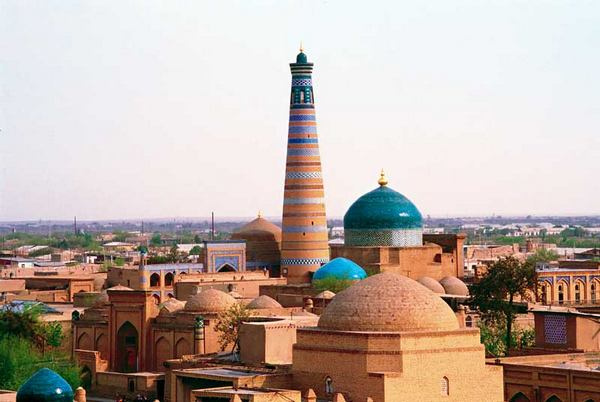

Xorazm viloyati
Xorazm viloyati — Oʻzbekiston Respublikasi tarkibidagi viloyat. 1925-yil fevraldan 1938-yil yanvargacha Xorazm okrugi, 1938-yil 15-yanvarda viloyat maqomiga oʻtkazilgan. Viloyat shimol va shimoli- gʻarbdan Qoraqalpogʻiston respublikasi, janub va janubi-gʻarbdan Turkmaniston respublikasining Toshhovuz viloyati, janubi-sharqdan Turkmaniston respublikasining Lebap viloyati, sharqdan Buxoro viloyati bilan chegaradosh. Shaharlari — Urganch, Xiva, Hazorasp va Pitnak. Umumiy maydoni — 6,05 ming kvadrat kilometr. Maʼmuriy markazi — Urganch shahri. Xorazmning turizm markazi-Xiva shahri. Xorazmning sanoat markazi-Pitnak shahri. Xorazmning savdo va biznes markazi-Hazorasp shahri
